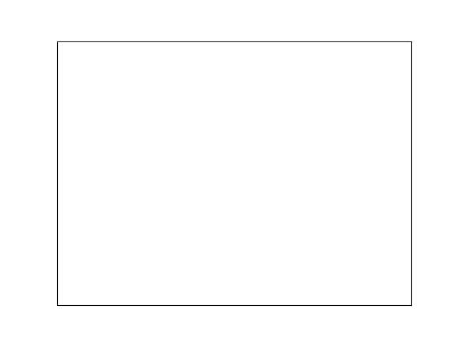

Note
Go to the end to download the full example code
3D plotting vignette¶
Demo 3D plotting with matplotlib and decorate the figure.
import numpy as np
import matplotlib.pyplot as plt
from mpl_toolkits.mplot3d import Axes3D
fig = plt.figure()
ax = Axes3D(fig)
X = np.arange(-4, 4, 0.25)
Y = np.arange(-4, 4, 0.25)
X, Y = np.meshgrid(X, Y)
R = np.sqrt(X**2 + Y**2)
Z = np.sin(R)
ax.plot_surface(X, Y, Z, rstride=1, cstride=1, cmap=plt.cm.hot)
ax.contourf(X, Y, Z, zdir="z", offset=-2, cmap=plt.cm.hot)
ax.set_zlim(-2, 2)
plt.xticks([])
plt.yticks([])
ax.set_zticks([])
ax.text2D(
0.05,
0.93,
" 3D plots \n",
horizontalalignment="left",
verticalalignment="top",
size="xx-large",
bbox={"facecolor": "white", "alpha": 1.0},
transform=plt.gca().transAxes,
)
ax.text2D(
0.05,
0.87,
" Plot 2D or 3D data",
horizontalalignment="left",
verticalalignment="top",
size="large",
transform=plt.gca().transAxes,
)
plt.show()
Total running time of the script: (0 minutes 0.044 seconds)